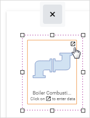
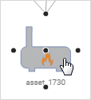

The Site Diagram provides a visualization of the assets, streams, and chemicals linked to a source profile at a particular site, and the relationships between them.
If you do not have a Default Location defined in your user settings, use the Site Selectorat the top of the Emissions Inventory menu to select a site in your organization tree.
In the Emissions Inventory menu (or on the Location Details layout), click Site Diagram.
The site diagram displays a visualization of the most recent source profile for the selected site. If there is more than one source profile currently associated with the site, each source profile will display on the diagram. If there is no source profile associated with the site, the site diagram will be blank.
Locating Data
The Tree View tab displays the assets, emission sources, and streams associated with the site in a tree format. These will be grouped by source profile if there is more than one source profile associated with the site. Expand the nodes as necessary.
When you click an element in the tree view, the corresponding icon in the diagram is selected, and vice versa.
If an asset has associated custom metrics, inspections, permits, and/or source test data, they will be grouped by year and date; click the link to open the related record.
Modifying the Site Diagram
On the diagram, assets and emission sources are represented by icons, while streams are represented by arrows that connect the assets and source profiles.
The Add tab displays a list of asset types and emission sources that you can add to the diagram. These are represented by a default icon that can be changed in the UserIcon look-up table.
To add an element to the diagram:
Drag the appropriate icon from the Add tab to the diagram. This is equivalent to creating a new record connected to the site.

Click at the top right of the element in the diagram to open the corresponding layout to enter the data. The icon and corresponding record will not be saved to the location (and diagram) until you enter and save the required information on the layout.
In the diagram, resize the icon if necessary.
To add a stream:
Hover over an asset or source profile icon. Five connector handles will surround it.

Click a connector handle to display an arrow, then drag the arrow to another asset or source profile.
Click to open the corresponding layout; until you complete the corresponding layout for the stream, it will be titled “Stream not Configured”. Once you have completed the layout, its Stream Name will display instead.
To change a stream, click the arrow. It will display in orange and resize handles display on each end. Use the handles to adjust the length of the arrow or connect it to a different icon.
To remove an asset or source profile from a site diagram, click its icon and then click . In the corresponding layout, click Delete. To remove a stream, click it and then click X.
To print the site diagram, choose Actions»Print Site Diagram.
 at the top right of the element in the diagram to open the corresponding layout to enter the data. The icon and corresponding record will not be saved to the location (and diagram) until you enter and save the required information on the layout.
at the top right of the element in the diagram to open the corresponding layout to enter the data. The icon and corresponding record will not be saved to the location (and diagram) until you enter and save the required information on the layout.  to open the corresponding layout; until you complete the corresponding layout for the stream, it will be titled “Stream not Configured”. Once you have completed the layout, its Stream Name will display instead.
to open the corresponding layout; until you complete the corresponding layout for the stream, it will be titled “Stream not Configured”. Once you have completed the layout, its Stream Name will display instead.